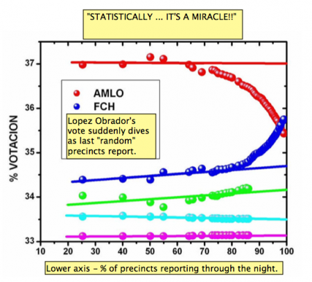

By Greg Palast, Guardian Monday 7 August 2006
In the six years since I first began investigating the burglary ring we call "elections" in America, a new Voting Reform industry has grown up. That's good. What's worrisome is that most of the effort is focused on preventing the installation of computer voting machines. Paper ballots, we're told, will save our democracy.
Well, forget it. Over the weekend, Mexico's ruling party showed how you can rustle an election even with the entire population using the world's easiest paper ballot.
On Saturday, Mexico's electoral tribunal, known as the "TRIFE" (say "tree-fay") ordered a re-count of the ballots from the suspect July 2 vote for president. Well, not quite a recount as in "count all the ballots" -- but a review of just 9% of the nation's 130,000 precincts.
The "9% solution" was the TRIFE's ham-fisted attempt to chill out the several hundred thousand protesting supporters of Andres Manuel Lopez Obrador who had gathered in the capital and blocked its main Avenue. Lopez Obrador, the Leftist challenger known by his initials AMLO, supposedly lost the presidential vote by just one half of one percent of the vote.
I say "supposedly" lost because, while George Bush congratulated his buddy Felipe Calderon on his victory, the evidence I saw on the ground in Mexico City fairly shrieks that the real winner was challenger AMLO.
President Bush should consider some inconvenient truths about the Mexican vote count:
First: The exit poll of 80,000 voters by the Instituto de Mercadotecnia y Opinion showed that AMLO bested Calderon by 35.1% to 34.0%.
|  |
Second: The precinct-by-precinct returns were quite otherworldly. I used to teach statistics and what I saw in Mexico would have stumped my brightest students.
Here's the conundrum: The nation's tens of thousands of polling stations report to the capital in random order after the polls close. Therefore, statistically, you'd expect the results to remain roughly unchanged as vote totals come in. As expected, AMLO was ahead of the right-wing candidate Calderon all night by an unchanging margin -- until after midnight. Suddenly, precincts began reporting wins for Calderon of five to one, the ten to one, then as polling nearly ended, of one-hundred to one. How odd. I checked my concerns with Professor Victor Romero of Mexico's National University who concluded that the reported results must have been a "miracle." As he put it, a "religious event," but a statistical impossibility. There were two explanations, said the professor: either the Lord was fixing the outcome or operatives of the ruling party were cranking in a massive number of ballots when they realized their man was about to lose.
How could they do it? "Easy pea-sy," as my kids would say. In Mexico, the choices for president are on their own ballot with no other offices listed. Those who don't want to vote for President just discard the ballot. There is no real ballot security. In areas without reliable opposition observers (about a third of the nation), anyone can stuff ballots into the loosely-guarded cardboard boxes. (AMLO showed a tape of one of these ballot-stuffing operations caught in the act.)
It's also absurdly easy to remove paper ballots, disqualify them or simply mark them "nulo" ("null," unreadable).
The TRIFE, the official electoral centurions, rejected AMLO's request to review those precincts that reported the miracle numbers. Nor would the tribunal open and count the nearly one million "null" votes -- allegedly "uncountable" votes which totaled four times Calderon's putative plurality.
Mexico's paper ballot, I would note, is the model of clarity -- with large images of each party which need only be crossed through. The ruling party would have us believe that a million voters waited in line, took a ballot, made no mark, then deliberately folded the ballot and placed it in the ballot box, pretending they'd voted. Maybe, as in Florida in 2000, those "unreadable" ballots were quite readable. Indeed, the few boxes re-counted showed the "null" ballots marked for AMLO. The Tribunal chose to check no further.
The only precincts the TRIFE ordered re-counted are those where the tally sheets literally don't tally -- precincts in which the arithmetic is off. They refuse even to investigate those precincts where ballot boxes were found in city dumps.
There are other "miracles" which the TRIFE chose to ignore: a weirdly low turnout of only 44% in the state where Lopez Obrador is most popular, Guerrero (Acapulco), compared to turnouts of over 60% elsewhere. The votes didn't vanish, the ruling party explained, rather the challenger's supporters, confident of victory, did not bother to vote. Confident ... in Mexico?
In other words, despite the right to paper ballots, the election was fiddled, finagled and fixed.
Does this mean US activists should give up on the fight for paper ballots and give in to robo-voting, computerized democracy in a box. Hell, no! Lopez Obrador has put hundreds of thousands in the street week after week demanding, "vota por vota" -- recount every vote. But AMLO's supporters can only demand a re-count because the paper ballot makes a recount possible. Were Mexico's elections held on a Diebold special, there would be no way to recount the electrons floating in cyberspace.
Paper ballots make democracy possible, but hardly guarantee it. "Null" votes, not voters, have chosen Mexico's president. The only other nation I know of with such a poisonously high percentage of "null" votes is the "Estados Unidos," the USA.
And just as in Mexico, the "null" vote, the trashed, spoiled, rejected ballots, overrode the voters' choice, so it was north of the Rio Grande in 2000 and 2004. Ballot spoilage, not computer manipulation, stole Ohio and Florida in those elections -- and will steal Colorado and New Mexico in the 2008 election.
In other words, my fellow gringo activists, we'd better stop fixating on laptop legerdemain and pledge our lives and fortunes to stopping the games played with registration rolls, provisional ballots, absentee ballots, voter ID demands and the less glamorous, yet horribly effective, methods used to suppress, invalidate and otherwise ambush the vote.
Editor's note: It has been claimed to CRV that the plot could be explained non-miraculously under the assumption that Obrador complained about vote totals in pro-Calderon districts, which caused those districts' reported results to be delayed.